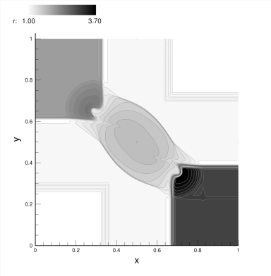
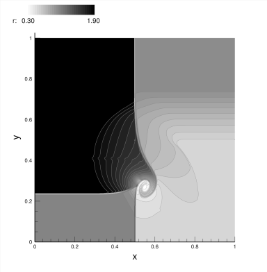

How to simulate 2D Riemann Problems
Two dimensional Riemann problems
The examples reported here concern with 2D Riemann problems. The initial conditions are the same as the ones reported by Kurganov and Tadmor [1]. A 2D quadrant [0,1]x[0,1] is subdivided into 4 sub-quadrants:
^ Y
|
1 -----------------------------------
| | |
| | |
| | |
| | |
| (2) | (1) |
| | |
| | |
| | |
0.5 -----------------------------------
| | |
| | |
| | |
| | |
| (3) | (4) |
| | |
| | |
| | | X
------------------------------------->
0 0.5 1
The initial conditions are imposed as following:
|(p,r,u,v)(1) if x > 0.5 and y > 0.5
|(p,r,u,v)(2) if x < 0.5 and y > 0.5
(p,r,u,v)(0)=|(p,r,u,v)(3) if x < 0.5 and y < 0.5
|(p,r,u,v)(4) if x > 0.5 and y < 0.5
Initial condition of the problems considered
The Kurganov and Tadmor configurations considered are:
Configuration 3:
(p,r,u,v)(1) = (1.500,1.5000,0.000,0.000)
(p,r,u,v)(2) = (0.300,0.5323,1.206,0.000)
(p,r,u,v)(3) = (0.029,0.1380,1.206,1.206)
(p,r,u,v)(4) = (0.300,0.5323,0.000,1.206)
An example of solution is reported in figure 1.

Figure 1: density profiles for t=0.3
Configuration 4:
(p,r,u,v)(1) = (1.100,1.1000,0.0000,0.0000)
(p,r,u,v)(2) = (0.350,0.5065,0.8939,0.0000)
(p,r,u,v)(3) = (1.100,1.1000,0.8939,0.8939)
(p,r,u,v)(4) = (0.350,0.5065,0.0000,0.8939)
An example of solution is reported in figure 2.

Figure 2: density profiles for t=0.3
Configuration 5:
(p,r,u,v)(1) = (1.0,1.0,-0.75,-0.5)
(p,r,u,v)(2) = (1.0,2.0,-0.75, 0.5)
(p,r,u,v)(3) = (1.0,1.0, 0.75, 0.5)
(p,r,u,v)(4) = (1.0,3.0, 0.75,-0.5)
An example of solution is reported in figure 3.

Figure 3: density profiles for t=0.3
Configuration 6:
(p,r,u,v)(1) = (1.0,1.0, 0.75,-0.5)
(p,r,u,v)(2) = (1.0,2.0, 0.75, 0.5)
(p,r,u,v)(3) = (1.0,1.0,-0.75, 0.5)
(p,r,u,v)(4) = (1.0,3.0,-0.75,-0.5)
An example of solution is reported in figure 4.

Figure 4: density profiles for t=0.3
Configuration 12:
(p,r,u,v)(1) = (0.4,0.5313,0.0000,0.0000)
(p,r,u,v)(2) = (1.0,1.0000,0.7276,0.0000)
(p,r,u,v)(3) = (1.0,0.8000,0.0000,0.0000)
(p,r,u,v)(4) = (1.0,1.0000,0.0000,0.7276)
An example of solution is reported in figure 5.

Figure 5: density profiles for t=0.3
Configuration 17:
(p,r,u,v)(1) = (1.0,1.0000,0.0,-0.4000)
(p,r,u,v)(2) = (1.0,2.0000,0.0,-0.3000)
(p,r,u,v)(3) = (0.4,1.0625,0.0, 0.2145)
(p,r,u,v)(4) = (0.4,0.5197,0.0,-1.1259)
An example of solution is reported in figure 6.

Figure 6: density profiles for t=0.3
References
[1] Kurganov, A. and Tadmor, E., Solution of Two Dimensional Riemann Problems for Gas Dynamics without Riemann Problem Solvers, Numerical Methods for Partial Differential Equations, vol. 18, n.5, 584–608, 2002.
 1.8.4
1.8.4